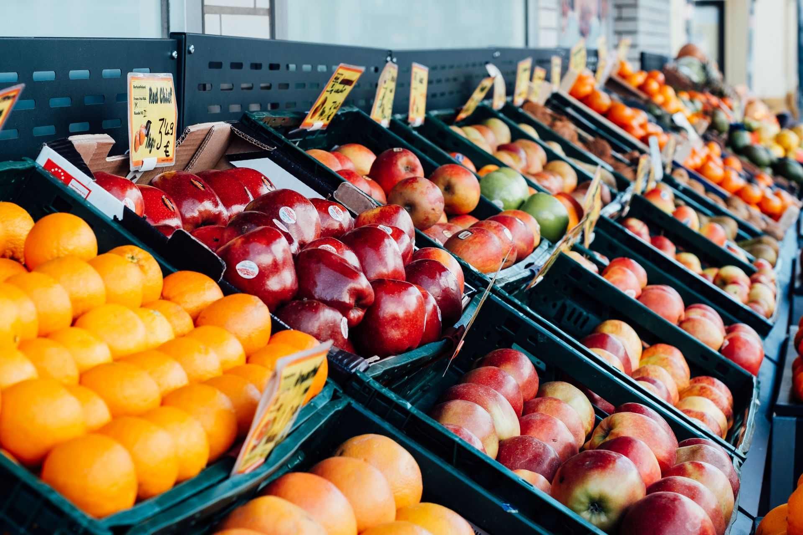
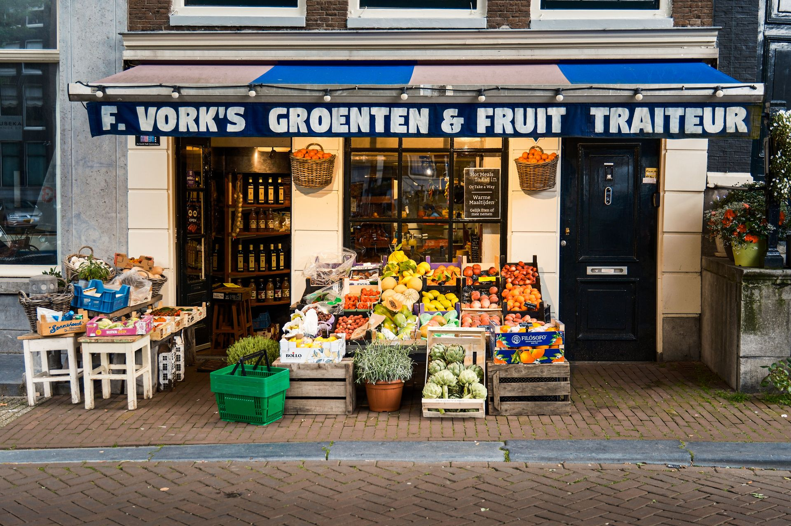
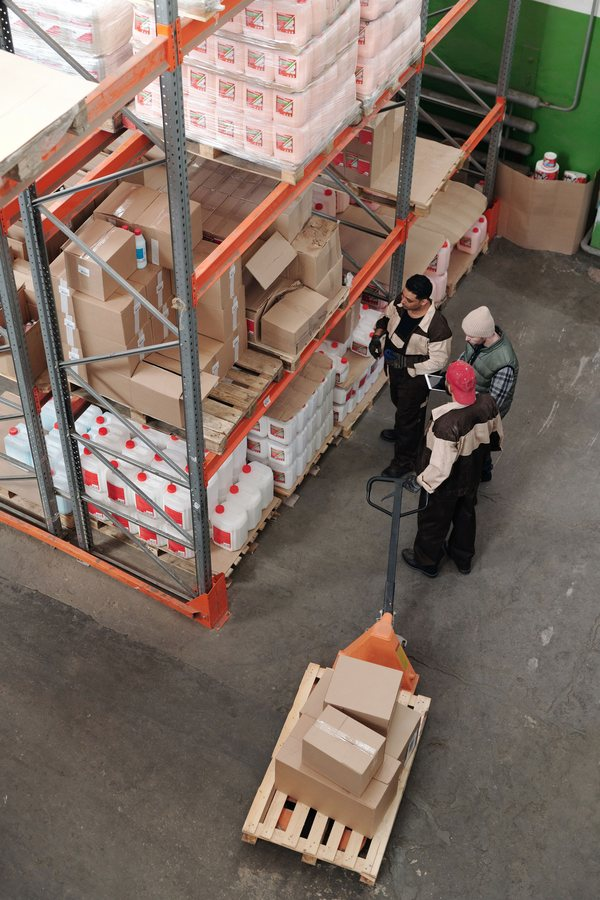
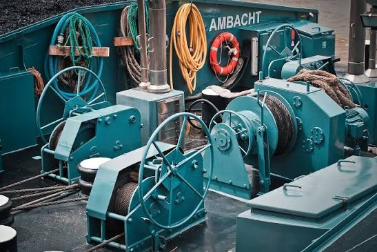
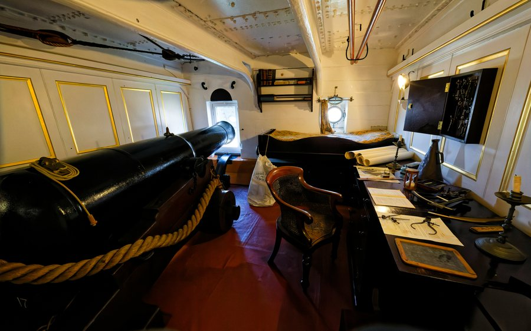
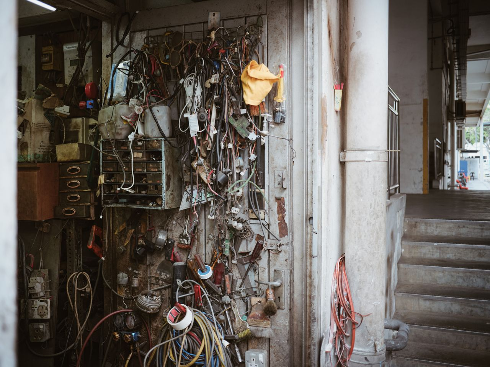
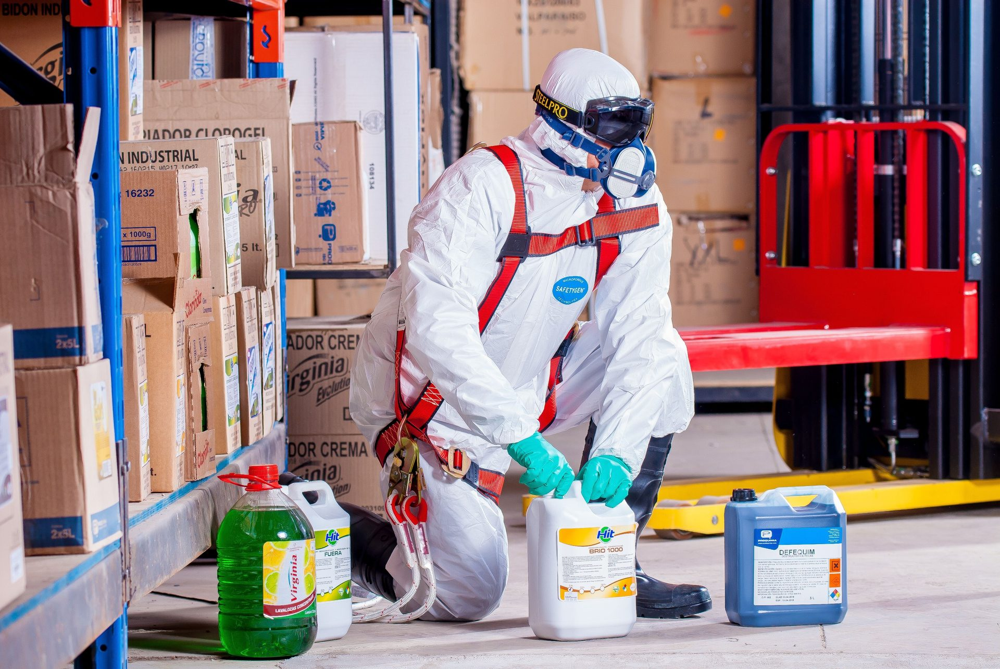
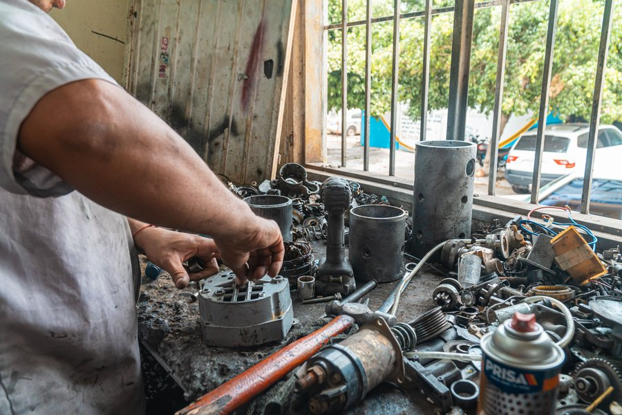
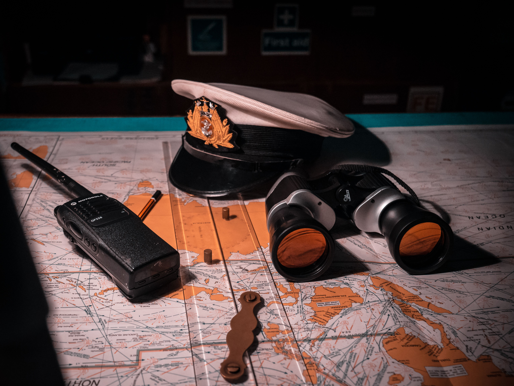
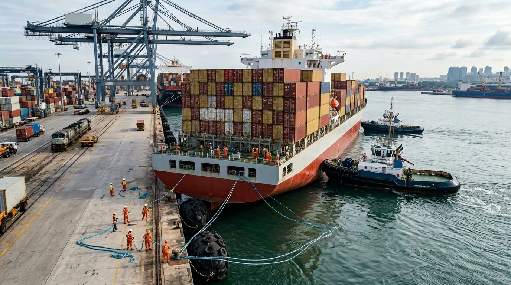

Ship Supply Services
Explore the complete range of marine supply services, from fresh provisions to technical spare parts, available at Port Lomé, Togo.
Port Lomé & The West African Network
Port Lomé is the primary deep-water seaport of Togo, strategically located on the Gulf of Guinea. It serves as a critical hub for maritime traffic in West Africa. Ship Chandler Togo provides seamless vessel supply and marine procurement from our base in Lomé, extending our rapid delivery network across the region's major maritime hubs.
Port Lomé
The primary deep-water port and capital, handling international cargo, cruise ships, and regional transit fleets.
Cotonou
The closest neighboring major port, located just east of Lomé along the coast, serving Benin and regional trade.
Tema
A major competitor and key hub west of Lomé, serving the Ghanaian hinterland and transshipment routes.
Abidjan
A significant West African port further west, connected via the coastal corridor for cargo and vessel supplies.
Lagos / Apapa
The largest port complex in the region, located to the east, handling massive container and vessel traffic.
Takoradi
A significant port handling both cargo and offshore support, located along the Ghanaian coast.
Dakar
A major transshipment hub on the western edge of Africa, frequently serviced by vessels calling at Lomé.
San Pedro
A key port in the western region of Côte d'Ivoire, part of the West African logistics network.
Provisions Supply
01
Ship Chandler Togo Provisions supply fresh, chilled, frozen, and dry provisions to support vessel crews and galley requirements. Provision orders can be prepared according to crew nationality, vessel requirements, requested brands, and pack sizes. High-quality food provision supply ensures the crew remains well-fed and operational. Sourcing reliable ship provisions requires careful attention to cold-chain logistics and shelf-life management. We arrange swift delivery of these provisions to vessels at Port Lomé, Cotonou, Tema, Abidjan, Lagos, Takoradi, Dakar, and San Pedro. We also offer customized menu planning to accommodate specific dietary restrictions and cultural preferences for multinational crews.
- Fresh fruits and vegetables
- Meat and poultry
- Fresh and frozen seafood
- Dairy products & Eggs
- Bakery products
- Rice, pasta, flour and cereals
- Canned & Frozen food
- Beverages and drinking water
- Coffee and tea
- Condiments and spices
Bonded Stores
02
Ship Chandler Togo supplies bonded and duty-free provisions subject to applicable customs and port regulations. We coordinate necessary clearances and delivery permits directly to the vessel. A reliable bond store supply chain ensures crew welfare items and duty-free goods are delivered efficiently and compliantly. Navigating local customs procedures requires experienced coordination. Whether your vessel is berthed at Cotonou, Port Lomé, Abidjan, Tema, Lagos, Dakar, Takoradi, or San Pedro, we ensure full compliance and timely delivery. Our team stays updated on the latest customs regulations to prevent any delays in your vessel's schedule.
- Tobacco products
- Confectionery
- Soft drinks
- Personal care products
- Crew welfare items
- Other bonded products upon request
Deck Stores
03
Ship Chandler Togo deck department can source and supply a wide range of deck consumables and equipment. Products can be quoted according to IMPA references, dimensions, SWL, material specifications, required certificates, or preferred manufacturers. Ensuring the availability of heavy-duty mooring ropes, wire ropes, and lifting accessories is critical for maritime safety. We coordinate delivery to vessels at Tema, Takoradi, Port Lomé, Lagos, Cotonou, Abidjan, San Pedro, and Dakar to keep your operations running smoothly. Our supply includes high-quality mooring lines and cargo securing materials that meet international safety standards.
- Mooring ropes and hawsers
- Wire ropes
- Shackles & Turnbuckles
- Chains
- Lifting accessories
- Cargo securing materials
- Marine paints and coatings
- Tarpaulins
- Cleaning equipment
- Deck maintenance tools
Engine Stores
04
Ship Chandler Togo supports engine departments with routine consumables, tools, and technical materials for main engines, generators, and auxiliary machinery. For technical requirements, customers are encouraged to provide maker, model, serial number, part number, drawings, or photographs to ensure accurate sourcing. Quality engine stores and spare parts minimize downtime. We arrange delivery for vessels at anchor off Abidjan or in transit through Lagos, Port Lomé, Dakar, Tema, Cotonou, San Pedro, and Takoradi. We also provide technical support to help identify the correct parts for your specific engine models, reducing the risk of costly errors.
- Filters & Gaskets
- Bearings
- Valves & Pumps
- Mechanical seals
- Lubricants and greases
- Hydraulic hoses and fittings
- Measuring instruments
- Hand and power tools
- Workshop consumables
- Selected machinery spare parts
Cabin & Galley Stores
05
Ship Chandler Togo provides everyday consumables and equipment required by the accommodation and catering departments. Cabin and galley stores are sourced to ensure crew comfort and hygiene standards are maintained. High-quality accommodation supplies, including bed linen, towels, and mattresses, contribute significantly to crew morale. We coordinate deliveries across Lagos, Dakar, Takoradi, Port Lomé, Tema, Abidjan, Cotonou, and San Pedro to keep your crew comfortable throughout the voyage. We offer a wide range of cleaning and laundry products that are specifically designed for use in a marine environment.
- Bed linen & Towels
- Blankets & Pillows
- Tableware & Cookware
- Kitchen utensils
- Galley equipment
- Cleaning products
- Laundry products
- Toiletries
- Garbage bags
- Crew welfare products
Safety & PPE
06
Ship Chandler Togo supplies safety and personal protective equipment according to vessel requirements and international standards. Where certification is required, the applicable standard or certificate requirement should be specified in the RFQ. A comprehensive range of safety equipment ensures compliance with maritime safety regulations. We provide timely delivery to San Pedro, Cotonou, Port Lomé, Abidjan, Tema, Lagos, Dakar, and Takoradi to keep your crew safe and compliant. We only source from reputable manufacturers to ensure all safety gear meets the stringent requirements of the maritime industry.
- Safety helmets & shoes
- Coveralls
- Protective gloves
- Safety goggles & face shields
- Respiratory protection
- Safety harnesses
- Life-saving equipment
- Fire-fighting related products
- Safety signs and tapes
- First-aid products
Electrical Stores
07
Ship Chandler Togo sources electrical products and consumables for deck, engine-room, and accommodation requirements. High-quality electrical stores, including marine lamps, cables, and circuit breakers, ensure the vessel's electrical systems remain operational and safe. Essential consumables such as fuses, relays, and contactors support routine maintenance. We arrange rapid delivery for vessels at Abidjan, Lagos, Dakar, Port Lomé, Takoradi, Cotonou, Tema, and San Pedro. Our team can assist in sourcing specialized marine electrical components that are compliant with international maritime standards.
- Marine lamps & LED lighting
- Cables and wires
- Plugs and sockets
- Circuit breakers
- Fuses & Relays
- Contactors
- Switches
- Batteries
- Electrical tools
- Cable accessories
Marine Chemicals
08
Ship Chandler Togo supplies marine and industrial chemicals for vessel maintenance, water treatment, and operational requirements. Product specifications and Safety Data Sheets (SDS) can be provided where applicable. We source quality chemicals, including degreasers and tank cleaning products, to maintain vessel hygiene. We ensure safe and compliant delivery to vessels at Takoradi, Port Lomé, San Pedro, Tema, Abidjan, Dakar, Cotonou, and Lagos. All our chemicals are handled and transported in accordance with international safety regulations to ensure the safety of your crew and the environment.
- Cleaning chemicals
- Degreasers
- Rust removers
- Descaling chemicals
- Tank cleaning products
- Water-treatment chemicals
- Maintenance chemicals
- Engine-room cleaning products
Welding Equipment
09Ship Chandler Togo can source a comprehensive range of welding and cutting materials for onboard maintenance and repair operations. Quality welding equipment, including electrodes, wires, and cutting discs, supports the vessel's crew in performing essential repairs safely and effectively. Access to industrial and marine gases is subject to local regulations. We arrange delivery to Dakar, Tema, Port Lomé, Lagos, Abidjan, Takoradi, San Pedro, and Cotonou. Our supply includes a variety of welding accessories and personal protective equipment to ensure safe and efficient operations.
- Welding electrodes
- Welding wire
- Cutting discs
- Grinding discs
- Welding accessories
- Welding PPE
- Regulators & Hoses
- Industrial and marine gases (subject to regulations)
Spare Parts
10
Ship Chandler Togo assists with standard and non-standard marine spare parts and technical equipment. For faster identification, please provide maker, equipment model, serial number, OEM part number, IMPA reference, dimensions, drawings, or clear photographs. Sourcing quality spare parts minimizes downtime and ensures operational reliability. We coordinate rapid delivery to vessels at Port Lomé, San Pedro, Takoradi, Dakar, Cotonou, Lagos, Tema, and Abidjan. Our global network allows us to source parts from major manufacturers, ensuring you get the right part quickly.
- Main and auxiliary engine parts
- Pump & Compressor components
- Electric motors
- Refrigeration components
- Navigation & Communication equipment
- Marine electronics
- Hydraulic components
- OEM and alternative spare parts
Nautical Charts
11
Ship Chandler Togo assists with nautical charts, marine publications, and operational reference materials required for the voyage. Access to up-to-date charts and publications is essential for safe navigation and compliance with international maritime regulations. We provide official logbooks and record books to ensure mandatory documentation is maintained. Our delivery network covers Cotonou, Abidjan, Port Lomé, Tema, Takoradi, San Pedro, Lagos, and Dakar. We ensure all charts and publications are the latest editions, keeping your vessel compliant with the latest navigational standards.
- Admiralty nautical charts
- IMO, SOLAS, MARPOL & STCW publications
- Official vessel logbooks and record books
- Marine navigational notices and flag sets
Tools & Hardware
12Ship Chandler Togo supply range includes hand tools, power tools, cutting tools, measuring equipment, fasteners, and general marine hardware for routine maintenance and emergency repairs. Quality tools and hardware are readily available to support the crew in maintaining operational efficiency and safety. We arrange fast delivery to Lagos, Cotonou, Takoradi, Port Lomé, Abidjan, Dakar, Tema, and San Pedro to keep your workshop ready. Our inventory includes a wide selection of professional-grade tools from trusted brands, ensuring durability and reliability.
- Hand tools
- Power tools
- Cutting tools
- Measuring equipment
- Fasteners
- General marine hardware
Urgent Supply
13
Vessel schedules can change quickly. For urgent requirements, Ship Chandler Togo coordinates procurement and delivery according to the vessel ETA, berth availability, port access, and local operating conditions. Urgent enquiries should clearly indicate the required delivery deadline so availability and logistics can be assessed immediately to prevent vessel delays. We dispatch rapidly to Port Lomé, Tema, San Pedro, Cotonou, Lagos, Abidjan, Dakar, and Takoradi. Our dedicated emergency response team is available 24/7 to handle last-minute requests and ensure your vessel is never delayed due to missing supplies.
- Emergency ETA and short-call coordination
- Rapid sourcing within vessel port stay
- Berth and outer anchorage launch dispatch
- Direct boarding agent synchronization